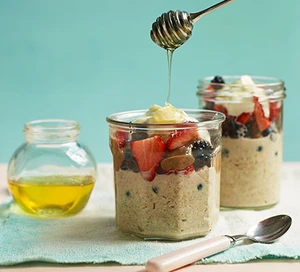

Overnight Oats

Description
Adapt this recipe for easy overnight oats to suit your tastes. You can add dried fruit, seeds and nuts, grated apple or pear or chopped tropical fruits for the perfect healthy breakfast.
Recipe
Ingredients
- ¼ tsp ground cinnamon
- 50g rolled porridge oats
- 2 tbsp natural yoghurt
- 50g mixed berries
- drizzle of honey
- ½ tbsp nut butter
Instructions
- The night before serving, stir the cinnamon and 100ml water (or milk) into your oats with a pinch of salt.
- The next day, loosen with a little more water (or milk) if needed. Top with the yogurt, berries, a drizzle of honey and the nut butter.